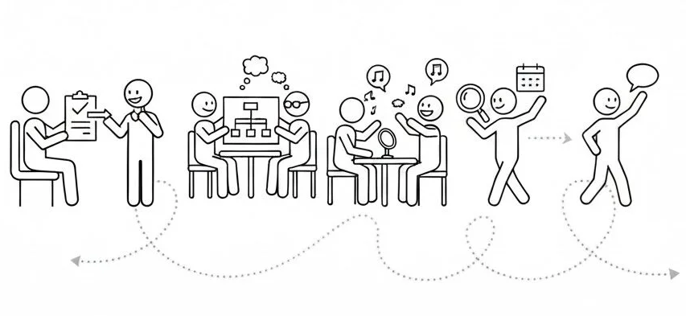

Un espacio tranquilo y sin prisas para escucharte, entender tu situación y resolver tus primeras dudas.
Valoramos en detalle cada aspecto de la comunicación para trazar un diagnóstico clínico riguroso.
Diseñamos sesiones dinámicas y totalmente personalizadas, adaptadas a tu propio ritmo de progreso.
El momento más esperado, donde consolidamos los objetivos alcanzados y celebramos tu autonomía.
Mantenemos el contacto de forma periódica para asegurar que los resultados perduren a largo plazo.
Imagina estos pasos como un mapa, no como una vía de tren. Aunque sabemos hacia dónde vamos, la ruta exacta la marcamos juntos. Dependiendo de cada caso, nos detendremos más en un punto o avanzaremos más rápido en otro, asegurándonos siempre de que el progreso sea firme y respetuoso con tus tiempos.

Si tienes cualquier duda o quieres reservar una consulta, no dudes en ponerte en contacto conmigo a través de cualquiera de los enlaces que encontrarás justo aquí abajo.